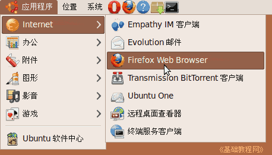
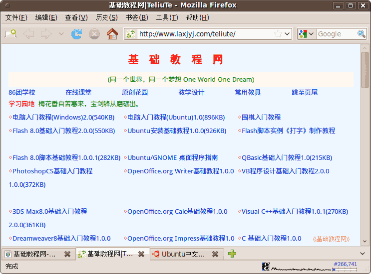
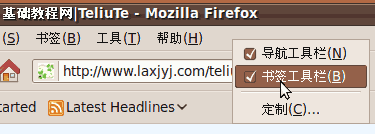
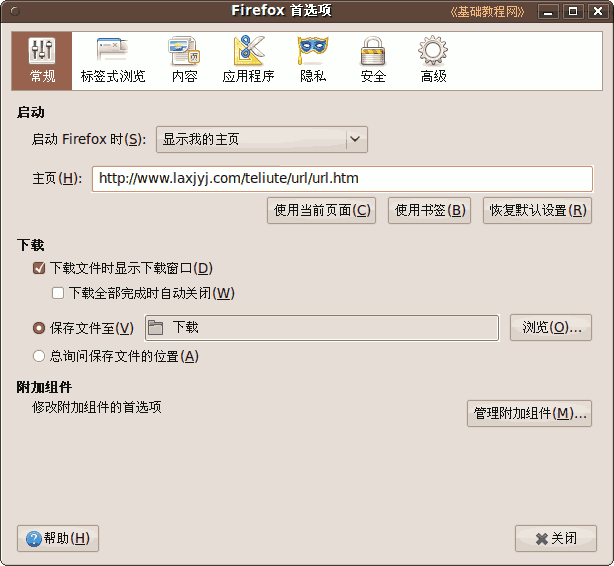
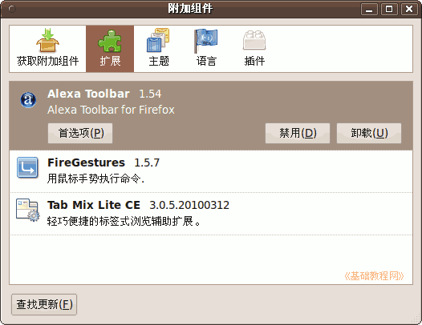

Ubuntu/GNOME 桌面程序指南
作者：TeliuTe 来源：基础教程网
七十、火狐浏览器 返回目录 下一课用它可以查看网页，上网冲浪安全性高；
1、火狐浏览器
1）点菜单“应用程序 - 互联网 - Firefox Web Browser”，打开窗口；

2）打开会自动载入主页，这可以在菜单 “编辑/工具 - 首选项” 里设定；

3）在菜单栏上点右键，可以去掉“书签栏”，再打勾还可以加上；

4）在首选项中可以设置主页、标签式浏览、内容字体、安全密码等；

5）点菜单 “工具 - 附加组件”，可以设置扩展选项、插件和语言包；

6）更多操作帮助，请参阅：http://teliute.org/mix/firefox/index.html
下载火狐程序和相关语言包：ftp://ftp.mozilla.org/pub/mozilla.org/firefox/releases/
本节学习了火狐浏览器的基础知识，如果你成功地完成了练习，请继续学习下一课内容；
本教程由86团学校TeliuTe制作|著作权所有
基础教程网：http://teliute.org/
美丽的校园……
转载和引用本站内容，请保留作者和本站链接。